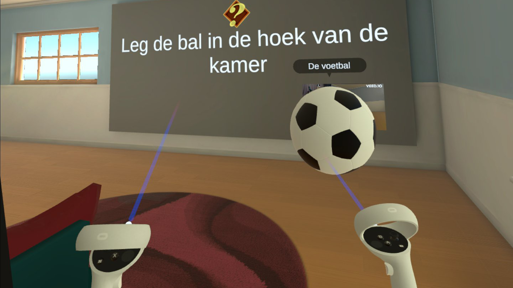
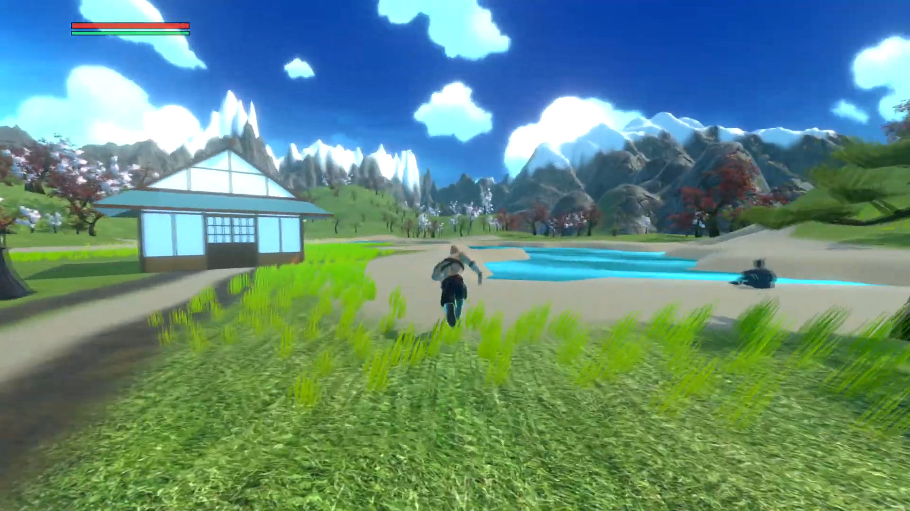
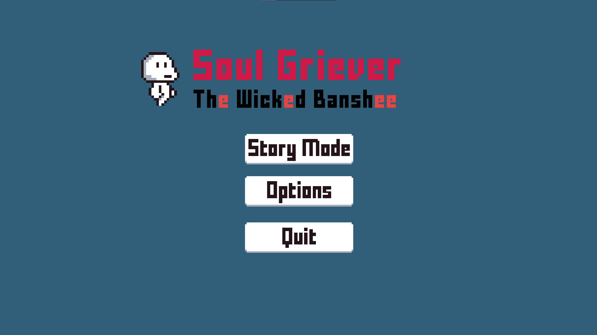
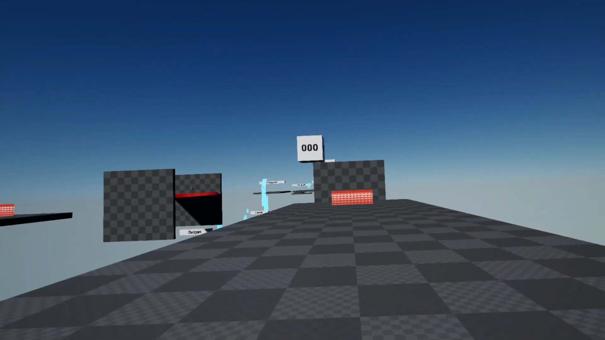
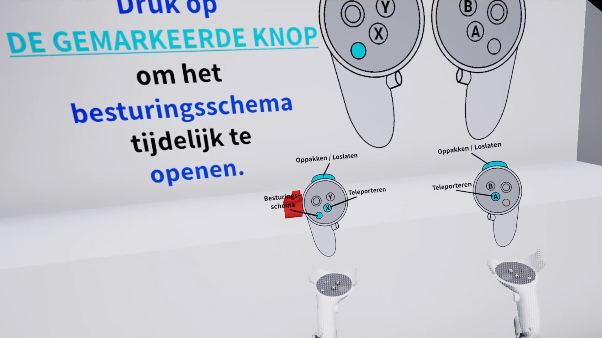

Project HoneyBee is a drone simulator developed for the Dutch Ministry of Defense. This
simulator enables military drone pilots to train their skills in drone operation at any time. The project
ultimately won the SPARC Award for Most Innovative Solution.
Keywords: Unity, C#, Research, User Testing, Realism
Project HoneyBee
Summary
The project was provided by the Dutch Ministry of Defense, specifically by the
13 Lichte Brigade. This branch of the Ministry of Defense specializes in the
application of combat or peace operations in case of disasters and calamities
worldwide.
13 Lichte Brigade has given us the assignment to create a solution for military
drone operators to practice their skills in case of full airspaces, allowing them
to keep their skills up to standards at all times.
In order to create a viable solution for Military drone operators to practice
their flying skills in case of full airspaces, we as QuantumMonkey Studios have
been developing a virtual drone simulator. This simulator allows pilots to
maneuver a drone through a virtual environment, focusing on the feeling of
realism when it comes to maneuvering the virtual drone.
The second focus of this simulator is also what sets this simulator apart from
competitors. And that is the tactical deployment of the virtual drone within the
simulator. Focusing on representing real life tactical missions, in which drones
are deployed
Responsibilities
Research
Design
User Testing
FPV Controller Integration (Custom Device)
VR Implementation (To simulate FPV Goggles)
Vehicle Support Mission (Enemy AI)
Indoor Rescue Mission (Visual Cue)
Note Taker
Documentation
The group was able to win a SPARC Award for The Most Innovative Solution. Below is an image of the
group after receiving the award.

Learn Language in VR (2022)
This group project involved creating a game for the Practoraat Interactieve Technologie
at ROC Tilburg. The game's goal is to teach Dutch to immigrant students at Schakelcollege.
Keywords: Unity, C#, Blender, Research, User Testing, VR, Meta Quest 2
Learn Language in VR
Summary
This project was developed by four students, including myself, during my third semester at Fontys
University of Applied Sciences as part of an open learning semester. The game was created for the
Practoraat Interactieve Technologie at ROC Tilburg with the aim of teaching Dutch to immigrant
students at Schakelcollege. These students work on different topics each period, and we selected
the home environment topic, which fit perfectly with their curriculum.
The game was also featured in a post and article.
Below are the first three prototypes I developed. Each one shows significant improvements, and
they
were all combined into a single final prototype (Prototype 4).

Shizen (2023)
This game was created as part of the YOG (Your Own Game) project during the Game Design
& Technology program (Semester 4) at Fontys University of Applied Sciences. It was developed in
collaboration with another student.
Keywords: Unity, C#, Blender, Game Design, Adobe Substance 3D Painter
Shizen
Summary
The game is a third-person action-adventure, where the player controls a god named Shizen, who
has just awakened from a long slumber. Upon awakening, Shizen discovers that the world, once
vibrant and full of life, is now ravaged by death, decay, and destruction. It is Shizen's mission
to restore the world he once cherished.
Responsibilities
Game Design
Level Design
Enemy AI
Environment modeling
Sound design and music
Puzzles
Storytelling & Dialogue
Menu Screens (Main Menu, Controls, Log, etc.)

Soul Griever: The Wicked Banshee (2020)
A 2D platformer developed by OBM Studio, consisting of five students, including myself.
The game follows the journey of a little ghost who aims to save his friend by collecting soul shards.
Keywords: Unity, C#, Aseprite
Soul Griever: The Wicked Banshee
Summary
This project was part of a larger assignment called 'Proftaak' during my time at ROC Ter AA,
where I studied Application & Media Design. For this assignment, we chose to create a 2D
platformer. The game originally included a homemade controller as well. We had approximately six
weeks to complete the project.
Responsibilities
Enemy, NPC, shard and weapon sprites/design
Level design
HUD (Health, stamina, collectibles and timer)
Dialogue
Pause menu and death screen

Enversed Studios - VR Multiplayer Parkour Game (2023)
During the first six weeks of my internship at Enversed Studios, I had to create a VR
multiplayer parkour game. The purpose of this project was to familiarize myself with the company's
workflow.
During the first six weeks of my internship at Enversed Studios, I had to create a VR
multiplayer parkour game. The purpose of this project was to familiarize myself with the company's
workflow. The game included all the basic functionalities available in the Enversed Framework. All
other aspects, such as game design and user testing, were taken just as seriously as if it were a
project for a client.
Responsibilities
Design
User Testing
Network Replication
Teams & Team Switch
Movements
Checkpoints & Finish Line
Obstacles
Weapons
Timer
Level Design
Audio

Enversed Studios - VR Tutorial (2023)
During my internship at Enversed Studios, my main assignment was to create a VR
tutorial that teaches inexperienced users the basic and most important VR interactions available in the
Enversed Framework.
During my internship at Enversed Studios, my main assignment was to create a VR
tutorial that teaches inexperienced users the basic and most important VR interactions available
in the
Enversed Framework.
Enversed Studios noticed that many of their clients had a large number of inexperienced users. A
lot of these users struggled to understand VR and found it too complicated to learn. My task was
to research the reasons behind this: what made VR so difficult and why these users gave up. Based
on my findings, I then had to create a prototype to help improve Enversed Studios' tutorials.
Hi, my name is Ben. I was born on November 12, 1999, in Eindhoven, The Netherlands.
I am passionate about games, music, movies, Japanese language & culture, and the idea of achieving one's dreams.
I firmly believe that anyone can reach their goals as long as they put in the time and effort!
One of my biggest passions right now is Japan. The country has had a huge influence on me, thanks to my family,
who have always been fans of Japanese culture. They introduced me to Ultraman, Kamen Rider, and Pokémon at a
young age. Interestingly, I watched Ultraman and Kamen Rider in Thai because my mom is from Thailand.
Visiting Japan in 2013 and 2016 changed everything for me. I fell in love not only with Japanese media but also
with the country and its culture. Since then, I've made it my goal to move to Japan in the future.
In 2017, I briefly studied Oriental Languages and Communication (Japanese) at Zuyd University of Applied
Sciences. However, I left after 3-4 months because the subjects didn't pique my interest. Still, my passion for
the Japanese language and culture never faded. I kept studying Japanese on my own and eventually realized that
textbooks weren't my thing. Instead, I adopted a more practical and consistent approach to learning.
Over the last 10 years, I've had multiple side jobs in different industries. I've worked as a stock clerk,
newspaper deliverer, food deliverer, and even as a voluntary animal caretaker.
Beyond work, I've been involved in personal creative projects. I play guitar, bass, and drums, and I enjoy
singing (even if I'm not that good). I also produce music and used to be my brother's cameraman for his guitar
cover videos. On top of that, I have some experience with video editing.
editing.
In 2018, I started studying Application & Media Development at ROC Ter AA in Helmond, The Netherlands. There, I
learned several coding languages, mainly focusing on web, software, and hardware (Arduino) development. During
my studies, I completed two internships: IBT Software Developer at DAF Trucks N.V. and Software Developer at Smartgoals / Spinnov.
My graduation assignment was graded Outstanding (10/10), with most subjects receiving a score above 8 (except
Dutch).
Currently, I'm studying HBO-ICT at Fontys University of Applied Sciences, specializing in Game Development and
Design. I've worked on multiple impactful projects, including: Learn Language in VR, which was a
well-received project that was referenced in later semesters, and
Project HoneyBee, which was a military drone simulator that won the SPARC Award for Most Innovative Solution.
During my studies, I also completed an internship at Enversed Studios, a VR game development company. Initially,
some coaches doubted whether I would be accepted, but I was determined to prove myself. In the end, I secured
the
internship and gained valuable experience working in the VR industry. This experience reinforced my belief that
perseverance and dedication can open doors, even when others have doubts.
During my sixth semester at Fontys, I achieved part of my dream by being selected for an exchange program at
Chuo
University in Tokyo, Japan. I took courses in literature, trying a different academic direction. Those five
months
were among the best of my life and strengthened my determination to move to Japan. It also reinforced my belief
that with enough effort, I can achieve anything.
Currently, I'm in my graduation semester, working on a project for my internship company while applying to
master's programs in Japan. Moving back to Japan to earn my master's degree is my main goal right now.
To see more of my programming skills, take a look at my resume, projects and LinkedIn!
Strengths
Reliable
Ben is a reliable person because he feels the responsibility of his work. He will try his best not to let
people down!
Passionate and Ambitious
Ben is a very passionate and ambitious person. He will not give up on the things he wants. Ben has many
ambitions and will work extra hard to achieve these.
Curious
Ben is very curious and is always willing to learn new skills.
Inspiring
Ben knows the importance of ambitions and will always tell family, friends and teammates to
work hard to achieve their own goals in life.
Weaknesses
Self-Critical
Ben always has the feeling that he can do more and better. It's very hard to satisfy himself.
This can also be a positive side, because sometimes this creates a feeling of guilt to work
harder.
Awkward
Ben is very awkward when starting out somewhere. He will need some time to get comfortable.
But when he's eventually comfortable, he's a very supportive teammate.
Direct
When Ben is comfortable, he can get very direct with his opinion. This is not meant to offend the other
party, it's usually constructive criticism.
But people might see it as a personal attack.